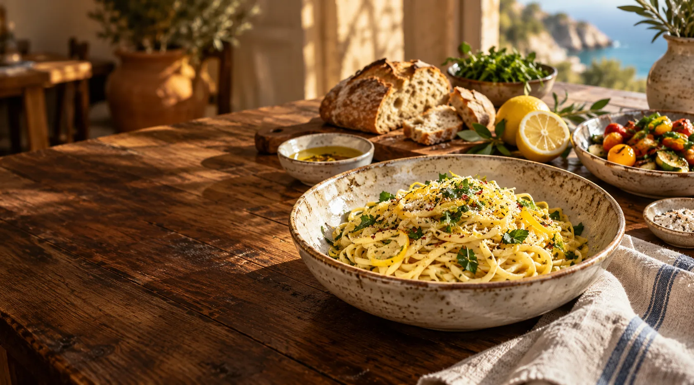

Lemon & herb pasta
Fresh herbs, olive oil, and a little sunshine.

GOOD FOOD. NO OCCASION NEEDED.
Seasonal plates, a generous table,
and room for one more.
COME AS YOU ARE
This example shows how a neighborhood restaurant can make its food, atmosphere, and menu easy to discover. Your own story, photos, and details would make it yours.
MAKE IT YOUR OWN
A real restaurant site could include your menu, hours, location, and booking link. This demo doesn’t take reservations or orders.
Talk to Aidan about this style